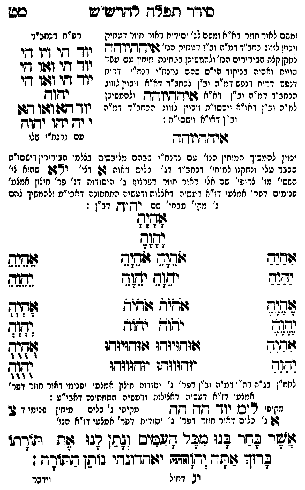

Neue Klartextfassung
[ומשם לאור חוזר דא"א ומשם לג' יסודות דאור חוזר דעתיק דעשיה דכללות ויכוין לזווג כחב"ד דמ"ה וב"ן דעתיק הנז' איההיוהה לתקן כלם הבירורים הנז' ולהמשיכן בבחינת מוחין עם עשר הויות וחלפי' בניקוד כ"ס שהם נרנח"י ורנח"י דרוח דנפש דרוח דנפש דמ"ה וב"ן לכחב"ד דא"א ויכוין לזווג בכחב"ד דמ"ה וב"ן דא"א איההיוהה ולהמשיכן למ"ה וב"ן דאו"א וישסו"ת ויכוין לזווג הכחב"ד דמ"ה וב"ן דאו"א וישסו"ת:] === טבלה === [טור ימין] [טור אמצעי] [טור שמאל] יוד הי ויו הי יוד הי ואו הי יוד הי ואו הי יהוה יוד הא ואו הא י יה יהו יהוה [עם כתר"ו שלו] === סוף טבלה === איההיוהה [יכוין להמשי' המוחין הנז' עם נרנח"י שבהם מלובשים בצלמי הבירורין דישסו"ת שכבר עלו ונתקנו למוחין דכחב"ד דג' כלים דאות א דצירוף לאי שהוא לי' הק' מו' צירופי שם אלי דאור חוזר דפרצוף ג' יסודות דג' פר' חיצון אמצעי ופנימי דפר' אמצעי דז"א דעשיה דכללות ורביעיה התחתונה דאבי"ע ולהמשיך להם ג' מקי' מבחי' שם יה"ה דב"ן:] === טבלה === [טור ימין] אַהַיַהַ יַהַוַהַ אֶהֶיֶהֶ יֶהֶוֶהֶ אִהִיִהִ יִהִוִהִ [טור אמצעי] אָהָיָהָ יָהָוָהָ אֹהֵיָהֵ אֹהֵיָהֵ יֹהֵוָהֵ יֹהֵוָהֵ אֹהֹיֹהֹ אֹהֹיֹהֹ יֹהֹוֹהֹ יֹהֹוֹהֹ אוּהוּיוּהוּ אוּהוּיוּהוּ יוּהוּווּהוּ יוּהוּווּהוּ [טור שמאל] אֵהֵיֵהֵ יֵהֵוֵהֵ אְהְיְהְ יְהְוְהְ אֻהֻיֻהֻ יֻהֻוֻהֻ === סוף טבלה === [לחח"ן בג"ה דת"י דמ"ה וב"ן דפר' ג' יסודות חיצון אמצעי ופנימי דאור חוזר דפר' אמצעי דז"א דעשיה דכללות ורביעיה התחתונה דאבי"ע:] [מקיפי ל"ם] יוד הה הה [מקיפי ג' כלים] [מוחין פנימי דצ'] צ א ג' [ג' כלים דאור חוזר דפר' ג' יסודות דפר' אמצעי דז"א הנז'] אשר בחר בנו מכל העמים ונתן לנו את תורתו ברוך אתה יהוה (אדני) יאהדונהי נותן התורה:
Original gegen neue OCR · Niqqud für Vergleich ausgeblendet
Original
[ומשםK102-001 לאור חוזר דא"א ומשם לג' יסודותK102-002 דאור חוזר דעתיק דעשיה דכללותK102-003 ויכוין לזווג כחב"ד דמ"ה וב"ן דעתיקK102-004 הנז' איההיוהה לתקן כלם הבירוריםK102-005 הנז' ולהמשיכן בבחינת מוחין עם עשר הויות וחלפי' בניקוד כ"ס שהם נרנח"י ורנח"י דרוח דנפש דרוח דנפש דמ"ה וב"ן לכחב"ד דא"א ויכוין לזווג בכחב"דK102-006 דמ"ה וב"ן דא"א איההיוהה ולהמשיכןK102-007 למ"ה וב"ן דאו"א וישסו"ת ויכוין לזווג הכחב"ד דמ"הK102-008 וב"ן דאו"א וישסו"ת:] === טבלה === [טור ימין] [טור אמצעי] [טור שמאל] יוד הי ויו הי יוד הי ואו הי יוד הי ואו הי יהוה יוד הא ואו האK102-009 י יה יהו יהוה [עם כתר"ו שלו] === סוף טבלה === איההיוהה [יכוין להמשי' המוחין הנז' עםK102-010 נרנח"י שבהםK102-011 מלובשים בצלמי הבירורין דישסו"ת שכבר עלו ונתקנו למוחיןK102-012 דכחב"ד דג' כלים דאות א דצירוף לאיK102-013 שהוא לי' הק'K102-014 מו' צירופיK102-015 שם אלי דאור חוזר דפרצוףK102-016 ג' יסודותK102-017 דג' פר' חיצון אמצעי ופנימי דפר'K102-018 אמצעי דז"א דעשיה דכללות ורביעיה התחתונהK102-019 דאבי"ע ולהמשיך להם ג'K102-020 מקי' מבחי' שם יה"ה דב"ן:] === טבלה === [טור ימין] אהיה יהוה אהיה יהוה אהיה יהוה [טור אמצעי] אהיה יהוה אהיה אהיה יהוה יהוה אהיה אהיה יהוה יהוה אוהויוהו אוהויוהו יוהוווהו יוהוווהו [טור שמאל] אהיה יהוה אהיה יהוה אהיה יהוה === סוף טבלה === [לחח"ןK102-021 בג"ה דת"יK102-022 דמ"ה וב"ן דפר' ג' יסודות חיצון אמצעיK102-023 ופנימי דאור חוזר דפר' אמצעיK102-024 דז"א דעשיה דכללות ורביעיה התחתונה דאבי"ע:] [מקיפי ל"ם] יוד הה הה [מקיפיK102-025 ג' כלים] [מוחיןK102-026 פנימי דצ'] צ אK102-027 ג' [ג'K102-028 כלים דאורK102-029 חוזר דפר'K102-030 ג' יסודותK102-031 דפר' אמצעי דז"א הנז'] אשר בחר בנו מכל העמים ונתן לנו את תורתו ברוך אתה יהוה (אדני) יאהדונהיK102-032 נותן התורה:K102-033
OCR · fehlbar
סידוך תפ"ד רדדרע"ש סט ומשםK102-001 לאור חוזר דא"א ומשם לג' יסידיהK102-002 דאור חוזר דטחיק רפ"ח דבחב"דK102-003 ויכוין לזווג כחב"ד דמ"ה וב"ן דטחיקK102-004 הנז' גפיץדץי"ך ץ יוךך דזי ויך בי לחקן קצת הבידוריםK102-005 הנז' ולהרמשינן בגחינת נזיחין טם עשד- יוך ג. וזן גי הויוח יאהי בנ קיד שי זם שחש נגנח'י. שני" גי( ( - ק . - נפש דריח דנששזדמ"ד וצ" ) גחב"' דא"א' ייני לזייג יוךך קר [3פד דן הכחב"דK102-006 דמ"ה וב"ן דא"א זפיחךין קח יליחמשיכן ישוחK102-007 למ"ה וב"ן דאו"א יישסו"ת ויכיין לזוונ הנחג"ד ומ"ה ודך דקגו(זשך קשK102-008 וב"ן דאו"א וישסו"ח :K102-009 י ודן יקד ידך (היךיו"ך טםK102-010 נרנח"י שלו יכוין להש"ך רמוחין רנז' טם נרנח"י שגהםK102-011 מלובשים בצלמי הבירורין דישסו"ח בכבר עלי וגחקנו למוחי'K102-012 דכחב"ד דו' נלים דצוח 22 דצי' יגK102-013 שהוא צי' הששי'K102-014 מו' צרופי'K102-015 שם אלי דאור חיזר דפרציןזK102-016 ג' היסודותK102-017 דג' פר' חיצון אמצע' פנימים דסר 'K102-018 אמצעי דז"א זטשיה דאצלוח ודטשיה החחחונהK102-019 דאבי"ע ולהמשיך להם נ'K102-020 מקי' מבחי' שם יךץ"דץ דב"ן : לזאנק 7 7 2 4 עשל2 8 7 14 7 צו גדבזיד ז(ד(זג 21714 53242 יבוד יה(ג יד( גגה לל שיש ז(9יףש להנך נדב יחוץ יאוש 7322 גזדזנד זוודויודו ו:(ד(יוד: [ז7- והגר יודזוזדו יזדווגדו לל לחח"ןK102-021 בג"ה דח"יK102-022 דמ"ה וב"ן דפר' ג' יסודות חיצון אמצטיK102-023 ופנימי דאור חוזר דפר' אמלעיK102-024 דז"א דעשיה דאצילוח ודטשיה התחתינה דאבי"ע : מקיפי "כן ין קך אך זקיפיK102-025 ג' כלים מוחיןK102-026 פנימי ד 7 גדK102-027 ג' ∅K102-028 כלים דאירK102-029 חוזר דשר'K102-030 ג' יסידוחK102-031 דפר' אמצעי דז"א הנז' שד נחזר 22ו מבר מפיס ((סן רגו שת תודתו פרו :זת- יד(זתח יזוחדוגחיK102-032 נותן בתודד : יש דחול וידברK102-033